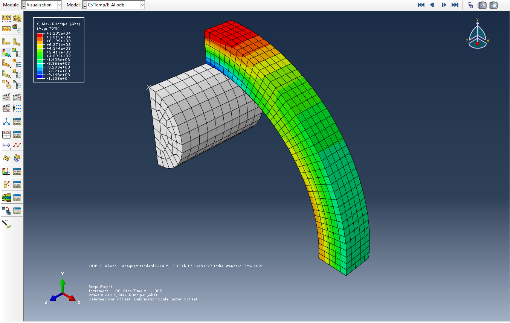
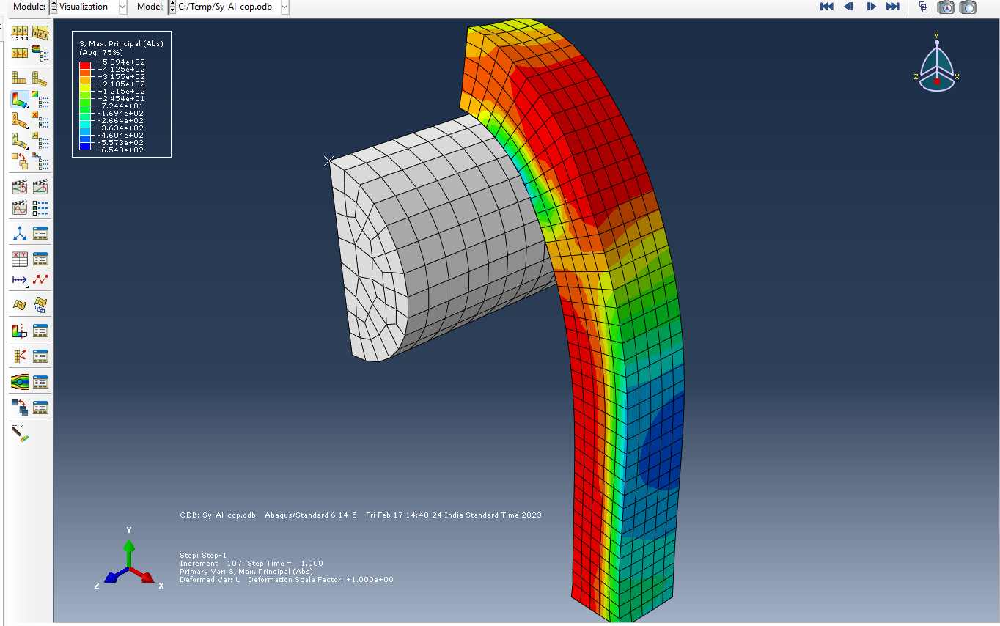
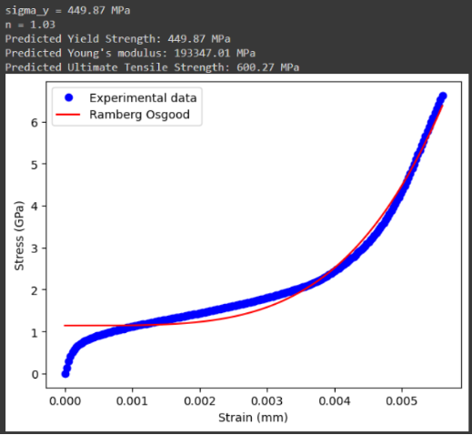

Finite element model
The model used Abaqus C3D20R quadratic, reduced-integration elements for the ring and R3D4 elements for rigid pins. Symmetry constraints and prescribed pin displacement represented the loading setup.
05 / Undergraduate Capstone · VIT Chennai · 2023
My undergraduate capstone combined Abaqus finite element analysis with Support Vector Regression to predict the mechanical properties of stainless steel 316L from miniature ring testing.

The challenge
Conventional tensile tests require enough material to manufacture a standard specimen. The Small Ring Test offers an alternative for miniature samples, with potential applications in nuclear and aerospace materials testing.
This capstone explored the relationship between ring deformation, stress distribution, and the material properties inferred from experimental testing. The analysis compared the ring response with uniaxial tensile data.
Simulation workflow
The model used Abaqus C3D20R quadratic, reduced-integration elements for the ring and R3D4 elements for rigid pins. Symmetry constraints and prescribed pin displacement represented the loading setup.
Elastic and elastoplastic studies examined the stress fields. A Ramberg–Osgood fit provided a baseline for estimating tensile strength, yield strength, and Young’s modulus.
I used Support Vector Regression to estimate material properties from the stress–strain response. The simulation supplied a database of load–displacement values, and predictions were compared with experimental reference values.
Abaqus visualisation
These original contour exports show the ring under different material-model settings. Open an image to inspect the mesh and contour legend at full size.





Each image retains its original contour scale. Colours should be interpreted against that image's legend rather than used alone to compare stress magnitudes across variants.
Capstone results
The final report compares experimental reference values with Ramberg–Osgood fitting and the machine learning model.
| Property | Experimental | Ramberg–Osgood | Machine learning |
|---|---|---|---|
| Ultimate tensile strength (MPa) | 600 | 600.27 | 608.24 |
| Young’s modulus (GPa) | 193.5 | 193.347 | 193.500 |
| Yield strength (MPa) | 450 | 449.9 | 440.61 |
Calculated from Table 2 in the report: machine learning predictions differ from the reference values by approximately 1.37% for tensile strength and 2.09% for yield strength, with Young’s modulus closely matching the reference. The Ramberg–Osgood values differ by less than 0.1% for these three properties. These comparisons describe the reported dataset.


The misalignment study also compared von Mises stress values of 653.4 MPa and 643.3 MPa, a change of approximately 1.5% for the tested configuration.